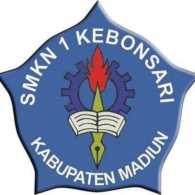

SELAMAT DATANG DI SMKN 1 KEBONSARI
VISI
Mewujudkan sekolah yang unggul dalam pendidikan berbasis teknologi,kreativitas,karakter.
berdaya saing dalam pekerjaan dan peduli terhadap lingkungan hayati
MISI
1.Menyiapkan tamatan yang beriman dan bertaqwa kepada Tuhan Yang Maha Esa, berbudi pekerti luhur, cerdas, dan memiliki kompetensi sesuai dengan bidang keahliannya.
2.ketersediaan sarana prasarana sekolah sesuai dengan Standar Nasional Pendidikan.
3.Meningkatkan mutu pelayanan administrasi, kelembagaan dan pengelolaan sumber daya manusia secara efektif dan efisien dalam rangka memberikan dukungan terhadap peningkatan mutu pendidikan.
4.Meningkatkan kualitas pembelajaran sekolah untuk menghasilkan lulusan berdaya saing dalam bekerja.
5.Menyiapkan peserta didik yang mampu bersaing di dunia kerja, perguruan tinggi, dan berjiwa wirausaha secara global.
6.Mewujudkan lingkungan yang nyaman, aman, rindang, asri dan bersih menuju Sekolah Adi Wiyata.